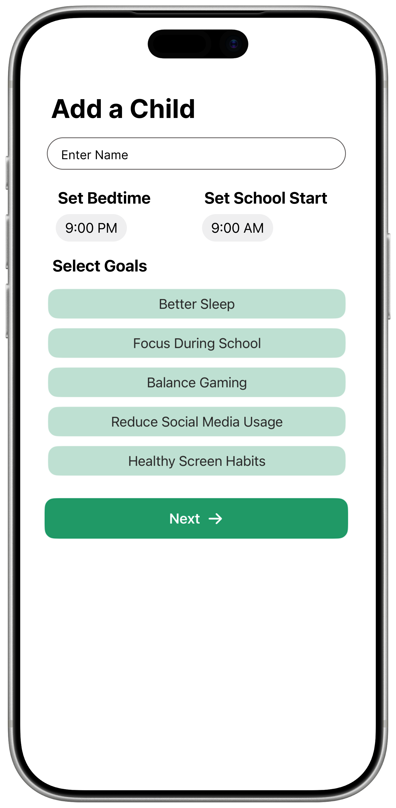
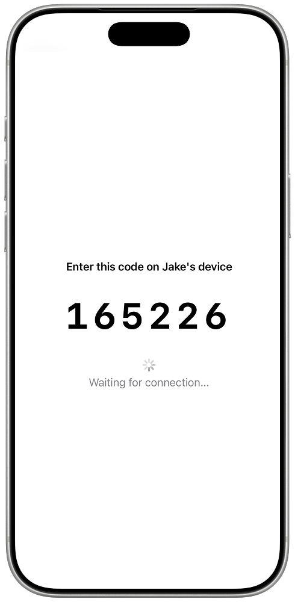
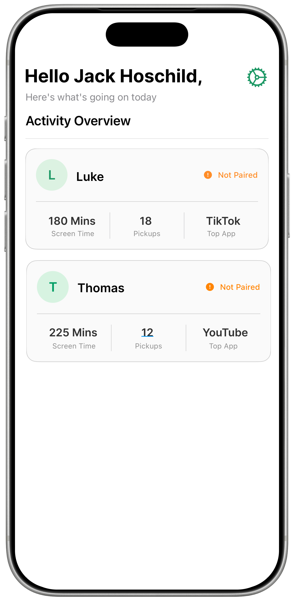
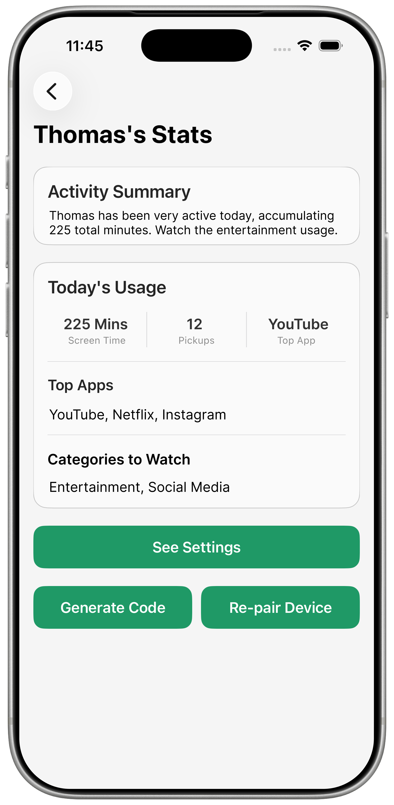
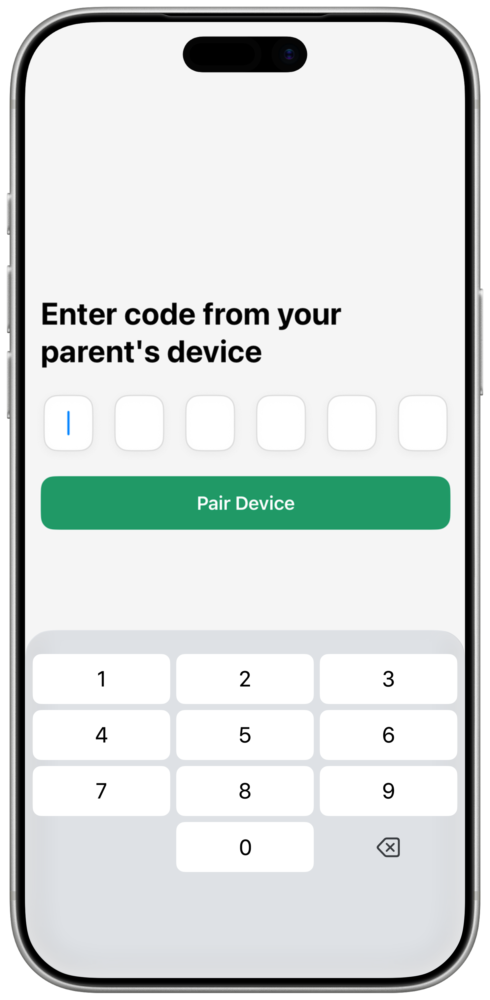
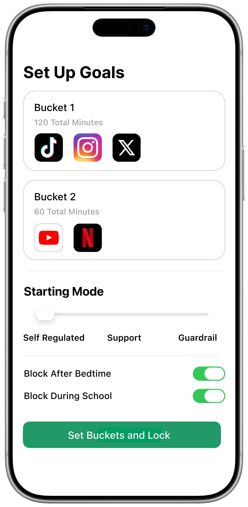

Mode 1
Self sufficient mode
The child sees a clear goal, builds a streak for getting off before the target, and makes positive progress in the treehouse and pet-care experience.
Digital Wellbeing for Families
Treehouse helps parents and kids work toward healthier screen use together. The app starts with visible goals, reminders, and positive rewards so children can practice self-sufficiency, then only adds stronger guardrails if repeated patterns show they are needed.
Starting point
Self-sufficient habits before restrictions
Escalation path
Support prompts first, guardrails only if needed
Reward loop
Treehouse pets, streaks, and earned currency for good behavior
What Treehouse Is
Treehouse pairs a parent's device with a child's device so families can set clear goals, send timely reminders, and help kids understand what healthy screen use looks like in everyday life.
The goal is to encourage children to be more self-sufficient over time. Parents get visibility into usage and progress, while kids get a visible target, a streak for getting off early, and positive progression through the treehouse game experience.
Three Modes
Treehouse is designed as a progression system. Families can start with the lightest level of support and only move upward if a child keeps blowing past the agreed limits.
Mode 1
The child sees a clear goal, builds a streak for getting off before the target, and makes positive progress in the treehouse and pet-care experience.
Mode 2
Treehouse adds warnings, countdowns, reflection prompts, and rewards for self-stopping so the child gets more structure without immediately being blocked.
Mode 3
If repeated limits are ignored, parents can escalate to soft locks or hard blocks for specific apps or time windows like bedtime and school.
Family flow
Parents can pair devices quickly, review dashboards, inspect a child's app habits, and tune goals and escalation settings over time.
Product Flow
The experience starts with setup and pairing, branches into parent oversight and child participation, then closes the loop with a game that rewards good habits instead of doom scrolling.







Why It Matters
The product is intentionally not framed as a blocker-first app. Its core purpose is to help children learn when to stop on their own, respond to reminders, and build routines that feel internal instead of purely enforced.
When a child repeatedly ignores those opportunities, Treehouse can still protect bedtime, school, and other important windows. That combination of visibility, coaching, and optional enforcement is what makes the app useful for real families.